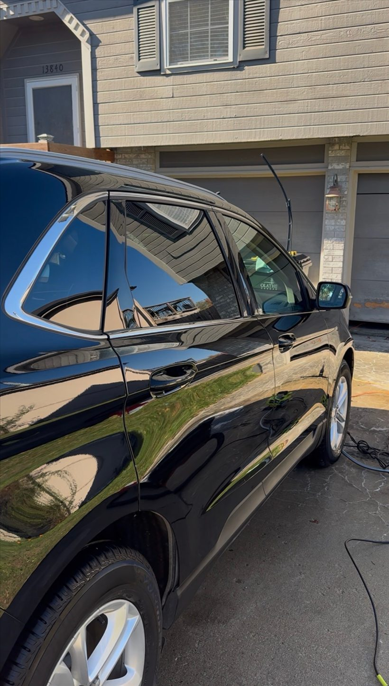

Mobile exterior car detailing starting at $89 in Johnson County, Kansas. Foam bath, hand wash, wheel and tire cleaning, exterior glass and paint protection.
What the Fresh Finish includes
The Midwest Fresh Finish starts at $89 and combines a premium foam bath and hand wash with deep wheel and tire cleaning. Tire conditioning, exterior glass cleaning and hydrophobic paint protection finish the service. It is a practical choice when the outside needs attention and the interior can wait.
A wash and protection package
An exterior detail addresses road grime and dirt while giving wheels, tires and glass their own attention. The included protection is a paint protection product; this package does not advertise machine polishing or paint correction. If your concern is scratches, etched water spots, peeling clear coat or another specific defect, text photos before booking so we can discuss whether the service fits your needs.
Add shine or combine your services
Ceramic Wax is available for an additional $20 with an exterior or complete detail. It is a wax add-on, rather than a claim of a multi-year ceramic coating. If the cabin needs cleaning too, the Midwest Full Reset combines the interior and exterior packages. Vehicle size, condition and selected extras affect the estimate.
What we need at your address
Mobile service is available across Johnson County. An outdoor water hookup, a standard electrical outlet and a suitable place to work around the vehicle are required. If you are booking at an apartment or shared property, check that vehicle washing is permitted. Check the live booking calendar for available appointments; weather can require rescheduling.
Questions about this service
Will a wash remove scratches?
The Fresh Finish is a cleaning and protection service. Scratch removal and machine paint correction are not listed in this package.
Ready for a cleaner car?
Check the live calendar or text your vehicle details and photos for a quote. Serving Johnson County, Kansas. Water and power access required.